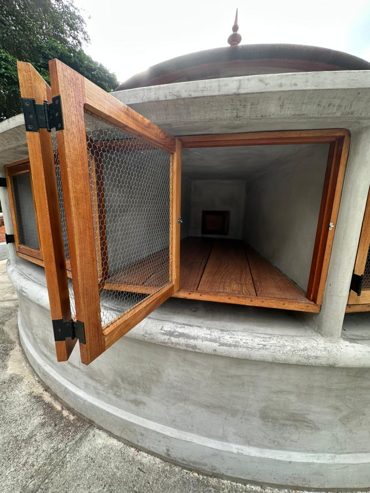
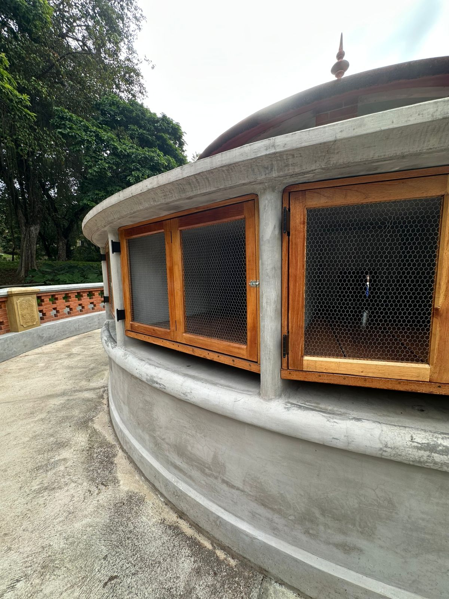

Fiocruz / RJ
A atuação da Lignum no Pavilhão Pombal, dentro do complexo da Fiocruz, demandou o mais alto nível de marcenaria técnica e carpintaria fina de canteiro. O grande destaque do projeto foi a fabricação e montagem de uma estrutura cilíndrica monumental em madeira maciça tratada, desenhada para se ajustar milimetricamente sobre uma base curva de concreto aparente.
O desafio consistiu na execução da estrutura ripada com esquadrias e telas integradas, respeitando a curvatura exata do perímetro e garantindo o funcionamento perfeito das aberturas. Utilizando técnicas avançadas de fixação invisível e proteção contra intempéries biológicas e climáticas, o elemento equilibra a robustez exigida para áreas externas com o refinamento geométrico e estético que o patrimônio institucional requer.
Manguinhos, Rio de Janeiro / RJ
Marcenaria Técnica Externa e Carpintaria Fina
Madeira de Lei Selecionada e Ferragens Especiais
2025
Análise dos fechamentos, caixilharia técnica e encaixe preciso dos elementos de madeira sobre a estrutura curva.

1. Ajuste e fixação dos painéis de madeira ripada e telas sobre a base de concreto curva.

2. Detalhe técnico da caixilharia aberta, evidenciando o alinhamento das dobradiças e fechamentos.